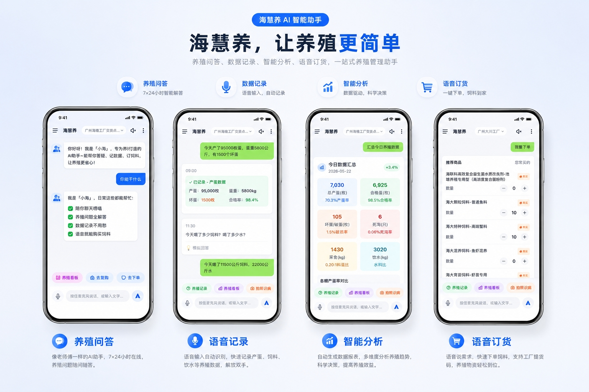
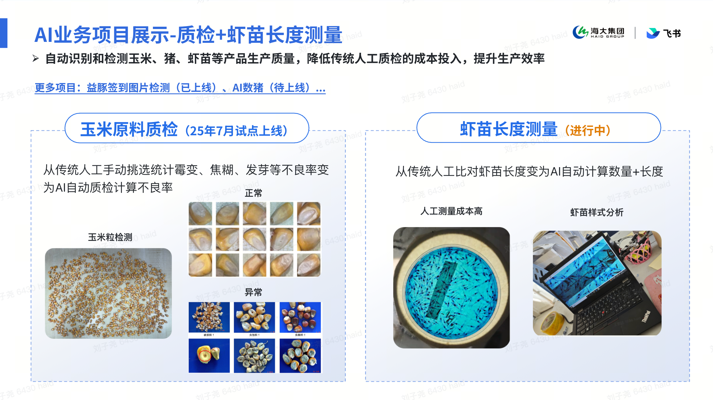
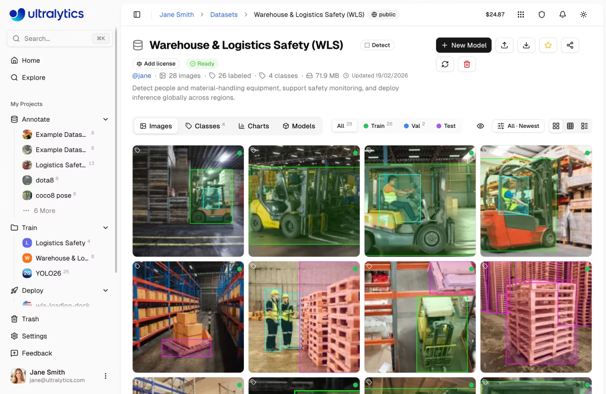
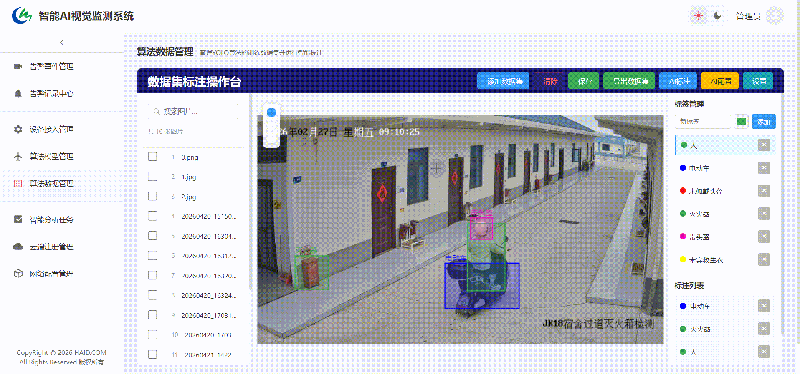
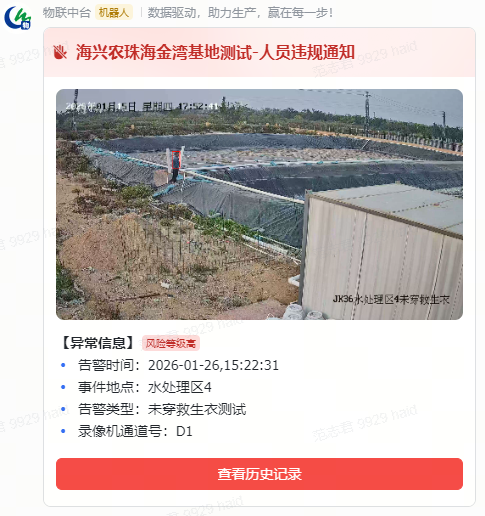

CHAPTER 02 · 同事们已经在做


实时告警 · 画面 1
告警事件管理界面
实时告警 · 画面 2
现场告警推送（飞书）
先看一眼 —— 集团里已经跑起来的 AI
日常办公 + 一线生产 · 既有"AI 帮你写"也有"AI 帮你看见"
📈
销售 360/营销易2.0 · 饲料板块
销售管理智能透析
识别 TOP 10 业务员、自动生成拜访计划；拜访过程中由 AI 透析对话风险点并给出应对方法。
在用
🎤
访谈助手 · 数智中心
通用型访谈智能体
访谈场景自定义 + 访谈过程实时记录与结构化整理；重点关注内容可按需定制。
在用
📝
通用SKILL · 中后台
智能汇报 / 周报总结
读取下属周报 → 自动萃取要点；按权限范围一键产出团队周报，把人从"抄数 + 拼装"里解放出来。
在用
💬
招聘系统 · 人力资源中心
团队知识问答智能体
替代 2 名 HR 的群内人工答疑——智能体在群里直接回答 HR 关于招聘系统的问题，背靠企业 QA 知识库。
在用
🐤
海慧养 · 养殖板块
一站式 AI 养殖管理助手
养殖问答 7×24h、语音输入自动记录数据、智能分析养殖趋势、语音一键订货 —— 让养殖更简单。
开发中
🌽
原料质检 + 水产养殖
视觉检测（玉米霉变 + 虾苗长度）
通过视觉算法识别玉米霉变 / 霉变风险 + 自动测算虾苗长度；让一线判断更稳定、可量化。
试点
🎥
视频告警 + 闭环管理 · 生产建设
边云协同智能视觉防控
依托存量监控（覆盖率 80%~90%）覆盖饲料 / 水产 / 畜禽三大板块，构建主动预警 + 边云协同 + 事件闭环（过程管理 + 结果复盘）的安全生产体系。
试点
🔧
IT 服务台 · 数智中心
小e
每日上千单 IT 运维问题 → AI 检索知识库给出回答，解决不了再转人工。下午我们会以它为例做案例剖析。
在用
💡
这些场景的共同点 —— 都不是"AI 自己想做的"，而是从业务里找出来的。下午分组讨论的目标，也是帮大家从自己的工作里挖出第一个值得做的场景。
访谈助手 · 数智中心
🎤 通用型访谈智能体 已在用 · 可定制
🎯 它是什么
不只是"会议纪要"——它是一个能"懂你访谈意图"的智能体。访谈对象 / 主题 / 关注点 / 输出格式 全部可以前置定义。
🆚 与"飞书智能纪要"的核心差异
- 飞书智能纪要：被动转录 + 通用摘要 —— AI 自己猜你关注什么
- 访谈助手：访谈前先设定场景背景 / 关注重点 / 输出结构；访谈后从你"预设的视角"自动提取结果
🔄 三步走
- ① 访谈前设定：场景背景、需关注的核心问题、期望输出的内容结构
- ② 访谈进行中：自动录音 + 实时记录
- ③ 访谈结束后：基于预设的"角度"自动提取关键信息，按你要的格式输出结果
🧩 一套底座，多种用法
- 客户访谈 / 经销商访谈 / 渠道调研
- 员工 1:1 / 离职访谈 / 招聘面试
- 供应商沟通 / 内部复盘 / 行业调研


视频告警 + 闭环管理 · 生产建设
🎥 边云协同智能视觉防控 试点中
🎯 它能做什么
把现有摄像头从"被动追溯录像"升级为"主动智能感知" —— 24h 自动盯、违规自动告警、事件自动闭环。
🛡️ 三大板块覆盖
- 水产：未戴安全帽 / 未穿救生衣 / 巡塘缺岗 → 杜绝溺亡 + 翻塘损失
- 饲料：高空作业安全带 / 码垛机区域入侵 / 配电箱起火与烟雾
- 畜禽：放养户外出监管（防非洲猪瘟）/ 分娩舍夜间巡检（提升仔猪成活率）
🔁 告警 → 处置 → 闭环
- 安灯管理：消息告知 / 需响应 / 需响应+处理 三级，关注过程
- 事件管理：周期内频发告警自动聚类，触发根本性整改
- 所有状态回传，形成"事前预警 → 事中处置 → 事后复盘"全闭环
💰 落地数据
- 全集团已部署 万+ 高清摄像机 · 千+ 录像机，极致利旧不大规模换硬件
- 饲料工厂核心节点覆盖率 80%~90%，水产基地核心产线 50%
- 已上线 623+ 放养户萤石 4G、3 家规模化猪场分娩舍巡检


